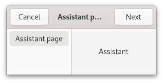

Gtk.Assistant¶
Example¶
- Subclasses:
None
Methods¶
- Inherited:
Gtk.Window (62), Gtk.Widget (181), GObject.Object (37), Gtk.Accessible (15), Gtk.Buildable (1), Gtk.Native (6), Gtk.Root (3)
- Structs:
class |
|
|
|
|
|
|
|
|
|
|
|
|
|
|
|
|
|
|
|
|
|
|
|
|
|
|
|
|
|
|
|
|
|
|
|
|
|
|
|
|
|
Virtual Methods¶
Properties¶
- Inherited:
Name |
Type |
Flags |
Short Description |
|---|---|---|---|
r |
|||
r/w/co |
|
Signals¶
- Inherited:
Name |
Short Description |
|---|---|
Emitted when the apply button is clicked. |
|
Emitted when then the cancel button is clicked. |
|
Emitted either when the close button of a summary page is clicked, or when the apply button in the last page in the flow (of type |
|
The action signal for the Escape binding. |
|
Emitted when a new page is set as the assistant’s current page, before making the new page visible. |
Fields¶
- Inherited:
Class Details¶
- class Gtk.Assistant(*args, **kwargs)¶
- Bases:
- Abstract:
No
GtkAssistantis used to represent a complex as a series of steps.An example
Gtk.AssistantEach step consists of one or more pages.
GtkAssistantguides the user through the pages, and controls the page flow to collect the data needed for the operation.GtkAssistanthandles which buttons to show and to make sensitive based on page sequence knowledge and the [enum`Gtk`.AssistantPageType] of each page in addition to state information like the *completed* and *committed* page statuses.If you have a case that doesn’t quite fit in ``GtkAssistant``s way of handling buttons, you can use the
Gtk.AssistantPageType.CUSTOMpage type and handle buttons yourself.GtkAssistantmaintains aGtkAssistantPageobject for each added child, which holds additional per-child properties. You obtain theGtkAssistantPagefor a child with [method`Gtk`.Assistant.get_page].The
GtkAssistantimplementation of theGtkBuildableinterface exposes the action_area as internal children with the name “action_area”.To add pages to an assistant in
GtkBuilder, simply add it as a child to theGtkAssistantobject. If you need to set per-object properties, create aGtkAssistantPageobject explicitly, and set the child widget as a property on it.- CSS nodes
GtkAssistanthas a single CSS node with the name window and style class .assistant.Deprecated since version 4.10: This widget will be removed in GTK 5
- classmethod new()[source]¶
- Returns:
a newly created
GtkAssistant- Return type:
Creates a new
GtkAssistant.Deprecated since version 4.10: This widget will be removed in GTK 5
- add_action_widget(child)[source]¶
- Parameters:
child (
Gtk.Widget) – aGtkWidget
Adds a widget to the action area of a
GtkAssistant.Deprecated since version 4.10: This widget will be removed in GTK 5
- append_page(page)[source]¶
- Parameters:
page (
Gtk.Widget) – aGtkWidget- Returns:
the index (starting at 0) of the inserted page
- Return type:
Appends a page to the self.
Deprecated since version 4.10: This widget will be removed in GTK 5
- commit()[source]¶
Erases the visited page history.
GTK will then hide the back button on the current page, and removes the cancel button from subsequent pages.
Use this when the information provided up to the current page is hereafter deemed permanent and cannot be modified or undone. For example, showing a progress page to track a long-running, unreversible operation after the user has clicked apply on a confirmation page.
Deprecated since version 4.10: This widget will be removed in GTK 5
- get_current_page()[source]¶
- Returns:
The index (starting from 0) of the current page in the self, or -1 if the self has no pages, or no current page
- Return type:
Returns the page number of the current page.
Deprecated since version 4.10: This widget will be removed in GTK 5
- get_n_pages()[source]¶
- Returns:
the number of pages in the self
- Return type:
Returns the number of pages in the self
Deprecated since version 4.10: This widget will be removed in GTK 5
- get_nth_page(page_num)[source]¶
- Parameters:
page_num (
int) – the index of a page in the self, or -1 to get the last page- Returns:
the child widget, or
Noneif page_num is out of bounds- Return type:
Gtk.WidgetorNone
Returns the child widget contained in page number page_num.
Deprecated since version 4.10: This widget will be removed in GTK 5
- get_page(child)[source]¶
- Parameters:
child (
Gtk.Widget) – a child of self- Returns:
the
GtkAssistantPagefor child- Return type:
Returns the
GtkAssistantPageobject for child.Deprecated since version 4.10: This widget will be removed in GTK 5
- get_page_complete(page)[source]¶
- Parameters:
page (
Gtk.Widget) – a page of self- Returns:
Trueif page is complete.- Return type:
Gets whether page is complete.
Deprecated since version 4.10: This widget will be removed in GTK 5
- get_page_title(page)[source]¶
- Parameters:
page (
Gtk.Widget) – a page of self- Returns:
the title for page
- Return type:
Gets the title for page.
Deprecated since version 4.10: This widget will be removed in GTK 5
- get_page_type(page)[source]¶
- Parameters:
page (
Gtk.Widget) – a page of self- Returns:
the page type of page
- Return type:
Gets the page type of page.
Deprecated since version 4.10: This widget will be removed in GTK 5
- get_pages()[source]¶
- Returns:
A list model of the pages.
- Return type:
Gets a list model of the assistant pages.
Deprecated since version 4.10: This widget will be removed in GTK 5
- insert_page(page, position)[source]¶
- Parameters:
page (
Gtk.Widget) – aGtkWidgetposition (
int) – the index (starting at 0) at which to insert the page, or -1 to append the page to the self
- Returns:
the index (starting from 0) of the inserted page
- Return type:
Inserts a page in the self at a given position.
Deprecated since version 4.10: This widget will be removed in GTK 5
- next_page()[source]¶
Navigate to the next page.
It is a programming error to call this function when there is no next page.
This function is for use when creating pages of the
Gtk.AssistantPageType.CUSTOMtype.Deprecated since version 4.10: This widget will be removed in GTK 5
- prepend_page(page)[source]¶
- Parameters:
page (
Gtk.Widget) – aGtkWidget- Returns:
the index (starting at 0) of the inserted page
- Return type:
Prepends a page to the self.
Deprecated since version 4.10: This widget will be removed in GTK 5
- previous_page()[source]¶
Navigate to the previous visited page.
It is a programming error to call this function when no previous page is available.
This function is for use when creating pages of the
Gtk.AssistantPageType.CUSTOMtype.Deprecated since version 4.10: This widget will be removed in GTK 5
- remove_action_widget(child)[source]¶
- Parameters:
child (
Gtk.Widget) – aGtkWidget
Removes a widget from the action area of a
GtkAssistant.Deprecated since version 4.10: This widget will be removed in GTK 5
- remove_page(page_num)[source]¶
- Parameters:
page_num (
int) – the index of a page in the self, or -1 to remove the last page
Removes the page_num’s page from self.
Deprecated since version 4.10: This widget will be removed in GTK 5
- set_current_page(page_num)[source]¶
- Parameters:
page_num (
int) – index of the page to switch to, starting from 0. If negative, the last page will be used. If greater than the number of pages in the self, nothing will be done.
Switches the page to page_num.
Note that this will only be necessary in custom buttons, as the self flow can be set with
Gtk.Assistant.set_forward_page_func().Deprecated since version 4.10: This widget will be removed in GTK 5
- set_forward_page_func(page_func, *data)[source]¶
- Parameters:
page_func (
Gtk.AssistantPageFuncorNone) – theGtkAssistantPageFunc, orNoneto use the default one
Sets the page forwarding function to be page_func.
This function will be used to determine what will be the next page when the user presses the forward button. Setting page_func to
Nonewill make the assistant to use the default forward function, which just goes to the next visible page.Deprecated since version 4.10: This widget will be removed in GTK 5
- set_page_complete(page, complete)[source]¶
- Parameters:
page (
Gtk.Widget) – a page of selfcomplete (
bool) – the completeness status of the page
Sets whether page contents are complete.
This will make self update the buttons state to be able to continue the task.
Deprecated since version 4.10: This widget will be removed in GTK 5
- set_page_title(page, title)[source]¶
- Parameters:
page (
Gtk.Widget) – a page of selftitle (
str) – the new title for page
Sets a title for page.
The title is displayed in the header area of the assistant when page is the current page.
Deprecated since version 4.10: This widget will be removed in GTK 5
- set_page_type(page, type)[source]¶
- Parameters:
page (
Gtk.Widget) – a page of selftype (
Gtk.AssistantPageType) – the new type for page
Sets the page type for page.
The page type determines the page behavior in the self.
Deprecated since version 4.10: This widget will be removed in GTK 5
- update_buttons_state()[source]¶
Forces self to recompute the buttons state.
GTK automatically takes care of this in most situations, e.g. when the user goes to a different page, or when the visibility or completeness of a page changes.
One situation where it can be necessary to call this function is when changing a value on the current page affects the future page flow of the assistant.
Deprecated since version 4.10: This widget will be removed in GTK 5
Signal Details¶
- Gtk.Assistant.signals.apply(assistant)¶
- Signal Name:
apply- Flags:
- Parameters:
assistant (
Gtk.Assistant) – The object which received the signal
Emitted when the apply button is clicked.
The default behavior of the
GtkAssistantis to switch to the page after the current page, unless the current page is the last one.A handler for the
::applysignal should carry out the actions for which the wizard has collected data. If the action takes a long time to complete, you might consider putting a page of typeGtk.AssistantPageType.PROGRESSafter the confirmation page and handle this operation within the [signal`Gtk`.Assistant::prepare] signal of the progress page.Deprecated since version 4.10: This widget will be removed in GTK 5
- Gtk.Assistant.signals.cancel(assistant)¶
- Signal Name:
cancel- Flags:
- Parameters:
assistant (
Gtk.Assistant) – The object which received the signal
Emitted when then the cancel button is clicked.
Deprecated since version 4.10: This widget will be removed in GTK 5
- Gtk.Assistant.signals.close(assistant)¶
- Signal Name:
close- Flags:
- Parameters:
assistant (
Gtk.Assistant) – The object which received the signal
Emitted either when the close button of a summary page is clicked, or when the apply button in the last page in the flow (of type
Gtk.AssistantPageType.CONFIRM) is clicked.Deprecated since version 4.10: This widget will be removed in GTK 5
- Gtk.Assistant.signals.escape(assistant)¶
- Signal Name:
escape- Flags:
- Parameters:
assistant (
Gtk.Assistant) – The object which received the signal
The action signal for the Escape binding.
Deprecated since version 4.10: This widget will be removed in GTK 5
- Gtk.Assistant.signals.prepare(assistant, page)¶
- Signal Name:
prepare- Flags:
- Parameters:
assistant (
Gtk.Assistant) – The object which received the signalpage (
Gtk.Widget) – the current page
Emitted when a new page is set as the assistant’s current page, before making the new page visible.
A handler for this signal can do any preparations which are necessary before showing page.
Deprecated since version 4.10: This widget will be removed in GTK 5
Property Details¶
- Gtk.Assistant.props.pages¶
- Name:
pages- Type:
- Default Value:
- Flags:
GListModelcontaining the pages.
- Gtk.Assistant.props.use_header_bar¶
- Name:
use-header-bar- Type:
- Default Value:
-1- Flags:
Trueif the assistant uses aGtkHeaderBarfor action buttons instead of the action-area.For technical reasons, this property is declared as an integer property, but you should only set it to
TrueorFalse.Deprecated since version 4.10: This widget will be removed in GTK 5